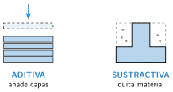
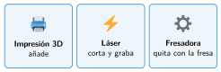
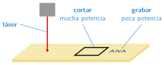
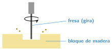

Corte láser y fresado
🤔 Pienso5 min
Qué hago aquí: Piensa un momento y contesta con lo que ya sabes. No pasa nada si no lo sabes: es para empezar.
Un llavero de madera tiene el borde oscuro, como quemado, y un dibujo marcado. ¿Cómo crees que se ha hecho?
✏️ Puedes responder escribiendo, con un dibujo o un esquema, o contándolo en voz alta.
📖 Leo y aprendo15 min
Qué hago aquí: Lee despacio, mira los dibujos y los ejemplos, y quédate con la idea clave del final.
Las máquinas del taller fabrican de dos formas.


La Snapmaker del taller tiene tres cabezales que se cambian: impresión 3D, láser y fresadora.
El láser es una luz muy fuerte. Quema el material por donde pasa. Puede hacer dos cosas:

La fresadora usa una herramienta que gira muy rápido: la fresa. Va quitando trocitos de madera, como un escultor muy preciso. Es una máquina CNC: sigue un programa del ordenador.

✏️ Hago25 min
Qué hago aquí: Haz las actividades en orden. Empieza siempre por las básicas.
Escribe A (aditiva) o S (sustractiva) en cada máquina.
Impresora 3D Láser Impresora de resina Fresadora
¿Qué diferencia hay entre cortar y grabar con láser?
Escribe los tres cabezales de la Snapmaker.
¿Qué técnica usarías para hacer un puzle plano de madera?
¿Qué técnica usarías para cada pieza? ¿Por qué?
- Un cartel de madera gruesa con letras hundidas.
- Una figura hueca con forma de animal.
- Tu nombre en un posavasos de madera.
🚀 Amplío (si quieres saber más)
Qué hago aquí: ¿Has terminado? Lee la curiosidad o elige el reto. Es voluntario.
Vuelve a la pregunta de la apertura. ¿Qué forma de fabricar gasta menos material? ¿Cuál será más rápida para hacer mil piezas iguales?
✅ Compruebo5 min
Qué hago aquí: Contesta sin mirar la ficha y marca cómo lo llevas.